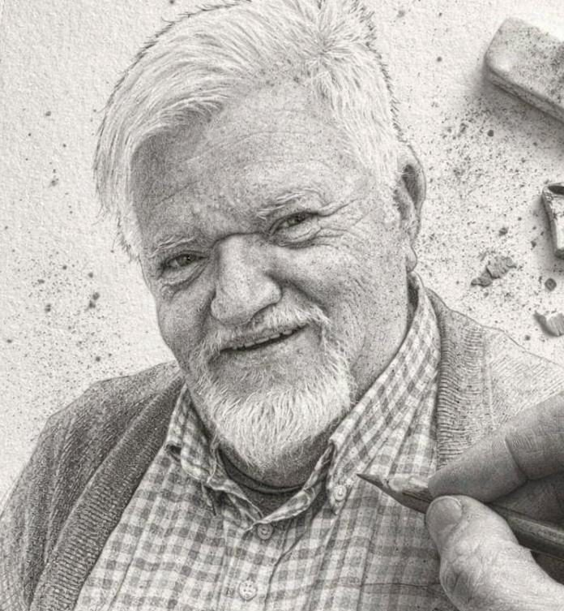

✦ Visitantes de todo el mundo
Todos unidos en la oración
Descubre nuestra misiónEn colaboración con
Parroquia de la Purísima Concepción · La Vileta · Camí de la Vileta, 183 · Palma
Cualquier cambio se avisa en nuestro grupo de WhatsApp. ¿Tienes una intención? Déjala aquí.
Déjanos tu intención y la presentaremos ante el Santísimo, por medio del Inmaculado Corazón de María, en nuestra próxima Hora Santa.
🕯️ DEJAR MI INTENCIÓNRecibe en tu móvil las reflexiones, los avisos de la Hora Santa con María, el Rosario, la formación y todas las novedades del Apostolado.
UNIRME AL GRUPOEs gratuito. Solo tienes que pulsar el botón y luego «Unirse al grupo».
¿Estás en el ordenador? Escanéalo con la cámara de tu móvil
Todos unidos en la oración, caminando junto a María hacia Jesús.

Es para mí una gran alegría y un honor daros la bienvenida a la página web del Apostolado Mundial de Fátima — Delegación de Mallorca. Aquí, en nuestra hermosa isla, hemos sentido la llamada de Nuestra Señora a vivir y difundir su Mensaje con el mismo ardor que la llevó a aparecerse a tres humildes pastorcitos en Cova da Iria hace más de cien años.
El Apostolado Mundial de Fátima, reconocido por la Santa Sede como Asociación Pública Internacional de Fieles, nos invita a asumir un compromiso de conversión personal, de oración diaria del Santo Rosario y de devoción al Inmaculado Corazón de María. En Mallorca queremos ser fieles a ese carisma: una comunidad unida en la oración, que trabaja por la paz y la conversión del mundo desde el corazón de nuestra tierra.
En este camino no estamos solos. Tenemos la gracia de colaborar con Lazos de Amor Mariano, un movimiento de espiritualidad mariana que agrupa familias, jóvenes y personas de toda condición en torno a la Virgen, y que nos ofrece retiros espirituales y una formación doctrinal continua que enriquece profundamente nuestra fe. Su carisma evangelizador y su amor a María son una fuente de inspiración para nuestra delegación.
Colaboramos también con el Rosario de la Aurora, una hermosa tradición de oración comunitaria que recupera la costumbre de rezar el Rosario al amanecer por las calles, llevando a la Virgen al corazón de los barrios y de las personas. En Mallorca, esta práctica es un signo visible de nuestra fe y un testimonio de esperanza para todos los que nos ven pasar.
Os invito a conocernos, a rezar con nosotros y, si sentís el llamado, a uniros a esta familia. Nuestra Señora de Fátima prometió que su Corazón Inmaculado triunfaría. Sed parte de ese triunfo.
El Apostolado Mundial de Fátima es una Asociación Pública Internacional de Fieles de la Iglesia Católica, reconocida oficialmente mediante Decreto del Consejo Pontificio para los Laicos el 7 de octubre de 2005, festividad de Nuestra Señora del Rosario, con confirmación definitiva el 18 de noviembre de 2010. Su sede internacional se encuentra en la Domus Pacis, en Fátima, Portugal.
Sus raíces se remontan a 1947 en una pequeña parroquia de New Jersey, Estados Unidos, donde el Padre Harold Colgan, tras recuperarse milagrosamente de una grave enfermedad por intercesión de la Virgen, dedicó su vida a difundir el Mensaje de Fátima. Junto con el escritor y conferenciante John Haffert, fundó lo que se conocería inicialmente como el Ejército Azul de Nuestra Señora de Fátima. El crecimiento fue extraordinario: un millón de miembros en 1950, cinco millones en 1953. Con el tiempo y el impulso del Pontificado de San Juan Pablo II, el movimiento evolucionó hasta su nombre actual, reflejando su vocación universal de Nueva Evangelización a través del auténtico Mensaje de Nuestra Señora.
Sus objetivos fundamentales son tres: promover la doctrina auténtica de la Iglesia Católica y los principios del Evangelio; impulsar la santificación personal de sus miembros mediante la vivencia fiel del Mensaje de Fátima; y contribuir al bien común difundiendo ese mismo Mensaje por todo el mundo.
"Conocer, vivir y difundir el Mensaje de Fátima en sintonía con la misión evangelizadora de la Iglesia, para la conversión del mundo y el triunfo del Inmaculado Corazón de María."
En 1916, un año antes de las apariciones de la Virgen, tres pastorcillos —Lucía, Francisco y Jacinta— recibieron tres visitas de un Ángel en la Cova da Iria y en el Loca do Cabeço, cerca de Fátima. El Ángel se identificó como el «Ángel de Portugal» y el «Ángel de la Paz».
Primera aparición (Primavera 1916): El Ángel apareció resplandeciente como la nieve y les enseñó a orar: «¡Oh Dios mío! Creo, adoro, espero y os amo. Os pido perdón para los que no creen, no adoran, no esperan y no os aman.»
Segunda aparición (Verano 1916): Les pidió orar y hacer sacrificios en reparación por los pecados y para obtener la conversión de los pecadores.
Tercera aparición (Otoño 1916): El Ángel llevó un cáliz con una hostia, de la que caían gotas de sangre. Los hizo comulgar, enseñándoles la oración reparadora: «Santísima Trinidad, Padre, Hijo y Espíritu Santo, os adoro profundamente y os ofrezco el preciosísimo Cuerpo, Sangre, Alma y Divinidad de Jesucristo...»
Conéctate en cualquier momento con el Santuario de Fátima,
corazón espiritual de nuestra devoción.
Abre la transmisión oficial del Santuario de Fátima — worldfatima.com
Textos de formación y meditación espiritual para crecer en la fe y en el espíritu del mensaje de Fátima.
Leer más →Momentos compartidos en oración, procesiones y encuentros de nuestra comunidad mariana en Mallorca.
Ver galería →Cánticos y música de devoción mariana que acompañan nuestra oración y nuestras celebraciones.
Escuchar →¿Sientes la llamada a entregarte más a María? Descubre cómo realizar tu Consagración a Jesús por María y forma parte de nuestra familia del Apostolado.
Ver noticias →Antigua tradición mariana de rezar el Rosario al amanecer, ofreciendo a Dios las primicias del día.
Descubrir →Recursos espirituales, webs del Apostolado Mundial, Fátima en directo y otros enlaces de devoción mariana.
Ver enlaces →El Apostolado Mundial de Fátima es una asociación pública de fieles que responde a la petición de Nuestra Señora: rezar, hacer penitencia y vivir el mensaje de Fátima en el día a día.
Rezar el Rosario diariamente y practicar los Cinco Primeros Sábados en comunidad.
Noticias, retiros y encuentros para profundizar en el mensaje de Fátima y la fe católica.
Difundir el mensaje de Fátima en Mallorca, colaborando con Lazos de Amor Mariano y el Rosario de la Aurora.
Ser residente en Mallorca y tener deseo sincero de vivir y difundir el mensaje de Nuestra Señora de Fátima.